Ministério da Gestão e da Inovação em Serviços Públicos
Secretaria de Gestão e Inovação (SEGES)
Versão 1.0
A finalidade deste manual é orientar as entidades privadas sem fins lucrativos que recebem recursos públicos por meio de instrumentos de parceria celebrados com a Administração Pública quanto aos procedimentos para a utilização do Sistema de Gestão de Acesso (SGA) e para o acesso ao ecossistema Compras do Governo Federal.
O documento reúne orientações operacionais sobre a solicitação de adesão, o cadastramento, a gestão de usuários, a definição de perfis de acesso, a formalização do Termo de Acesso e o acompanhamento das solicitações no Sistema de Gestão de Acesso (SGA).
As orientações estão organizadas para apoiar o usuário desde a solicitação de adesão até a gestão dos acessos da entidade no ecossistema Compras.
O Sistema de Gestão de Acesso (SGA) é a solução digital utilizada para o gerenciamento e controle dos acessos de usuários das entidades privadas sem fins lucrativos ao ecossistema Compras do Governo Federal.
O Sistema Integrado de Administração de Serviços Gerais (SIASG) integra a estrutura de sistemas utilizada pela Administração Pública Federal para a operacionalização dos processos relacionados às compras governamentais no âmbito do ecossistema Compras.
O controle de acessos constitui elemento essencial para a segurança da informação, a adequada segregação de funções e a conformidade com as diretrizes institucionais. Nesse contexto, o SGA atua no gerenciamento dos acessos e operacionaliza o processo de adesão, contemplando etapas como o cadastramento institucional, a definição de perfis de acesso e a formalização do Termo de Acesso, contribuindo para que a utilização dos sistemas ocorra de forma segura, rastreável e em conformidade com os normativos vigentes.
| Sigla | Descrição |
|---|---|
| CGSIL | Coordenação-Geral de Soluções Inovadoras em Logística |
| COQUAT | Coordenação de Qualidade de Atendimento |
| DELOG | Diretoria de Normas e Sistemas de Logística |
| MGI | Ministério da Gestão e da Inovação em Serviços Públicos |
| SEGES | Secretaria de Gestão e Inovação |
| SERPRO | Serviço Federal de Processamento de Dados |
| SGA | Sistema de Gestão de Acesso |
| SIASG | Sistema Integrado de Administração de Serviços Gerais |
| SISG | Sistema de Serviços Gerais |
| UASG | Unidade Administrativa de Serviços Gerais |
| SoD | Segregação de Funções (Segregation of Duties) |
Os conceitos a seguir apoiam a compreensão dos procedimentos apresentados neste manual.
| Termo | Definição |
|---|---|
| Autoridade Competente da Entidade Privada | Pessoa que, no âmbito da Entidade, possui competência legal, estatutária, contratual ou administrativa para praticar ou autorizar o ato de gestão em questão. |
| Dirigente Concedente | Dirigente máximo do órgão, responsável pela autorização e formalização da concessão. |
| Dirigente da Entidade Privada sem Fins Lucrativos | Dirigente máximo da entidade, responsável pela sua representação institucional. |
| Entidade privada sem fins lucrativos | Entidade que recebe recursos públicos provenientes de convênios ou instrumentos congêneres e que, quando necessário, solicita acesso ao SIASG por meio do SGA. |
| Órgão concedente | Órgão ou entidade pública que celebrou o convênio ou instrumento congênere e autorizou o repasse dos recursos à entidade privada. |
| Perfil de acesso | É o conjunto de permissões que determina o que uma pessoa pode fazer dentro de um sistema. |
| Responsável pelo cadastro | Pessoa indicada pela entidade privada para realizar o cadastro, acompanhar as solicitações e administrar os usuários e os respectivos acessos no SGA. |
| Substituto Legal | É a pessoa formalmente designada para exercer, temporariamente, as atribuições do titular quando este estiver ausente, impedido ou impossibilitado de desempenhar suas funções. |
| Termo de Acesso | É o documento que define as condições para uma pessoa acessar e usar determinado sistema, serviço, plataforma, ambiente ou informação. Ele é gerado no SGA e formaliza o acesso e a utilização do SIASG pela entidade privada sem fins lucrativos, devendo ser assinado pelo dirigente máximo da entidade ou por seu substituto legal. |
| UASG - Unidade Administrativa de Serviços Gerais | É um código utilizado para identificar uma unidade administrativa que realiza atividades relacionadas a compras, licitações, contratos, patrimônio, serviços e outras operações administrativas. |
Este manual tem por objetivo orientar as entidades privadas sem fins lucrativos que recebem recursos públicos por meio de instrumentos de parceria celebrados com a Administração Pública quanto aos procedimentos necessários para a utilização do Sistema de Gestão de Acesso (SGA), abrangendo:
A utilização do Sistema de Gestão de Acesso (SGA) está inserida no contexto do ecossistema Compras.gov.br e observa os normativos e as diretrizes aplicáveis à utilização dos sistemas de compras e à gestão de acesso.
Para as entidades privadas sem fins lucrativos, o acesso ao SGA é destinado às entidades que recebam recursos públicos provenientes de convênios ou instrumentos congêneres, nos termos da Portaria nº 355, de 9 de agosto de 2019.
Entre as referências relacionadas ao funcionamento do sistema, destacam-se:
O Sistema de Gestão de Acesso (SGA) é uma ferramenta informatizada destinada a gerenciar o acesso e a utilização do Sistema Integrado de Administração de Serviços Gerais (SIASG) pelos públicos abrangidos pela regulamentação aplicável.
Para as entidades privadas sem fins lucrativos que recebem recursos públicos provenientes de convênios ou instrumentos congêneres, o SGA é utilizado para viabilizar a solicitação de acesso ao SIASG e o gerenciamento dos usuários e respectivos perfis, observados os requisitos e procedimentos estabelecidos.
O Sistema de Serviços Gerais (SISG) é composto pelos órgãos e unidades da Administração Pública Federal direta, autárquica e fundacional, nos termos da legislação aplicável.
O Sistema Integrado de Administração de Serviços Gerais (SIASG) é utilizado para a operacionalização dos processos relacionados à gestão de materiais, serviços e compras governamentais no âmbito do SISG.
O Sistema de Gestão de Acesso (SGA) foi instituído para instrumentalizar o acesso e a utilização do SIASG pelos públicos abrangidos pela regulamentação aplicável, incluindo os órgãos e entidades não integrantes do SISG e as entidades privadas sem fins lucrativos que recebem recursos públicos provenientes de convênios ou instrumentos congêneres.
Os órgãos e entidades integrantes do SISG não precisam solicitar acesso ao SIASG por meio do SGA, pois já integram o SISG e utilizam o SIASG no âmbito desse sistema.
Para fins deste manual, devem solicitar adesão por meio do SGA as entidades privadas sem fins lucrativos que recebem recursos públicos provenientes de convênios ou instrumentos congêneres e que necessitam utilizar o SIASG, observados os requisitos e procedimentos aplicáveis.
A partir do próximo capítulo, são apresentados os procedimentos necessários para a solicitação de adesão e o gerenciamento dos acessos da entidade no SGA.
O processo de adesão ao Sistema de Gestão de Acesso (SGA) compreende etapas que envolvem a verificação da necessidade de acesso, a solicitação institucional, o cadastramento de usuários e perfis de acesso, a formalização do Termo de Acesso, a análise e validação da solicitação, e a habilitação dos acessos, incluindo, quando aplicável, o tratamento de pendências.
De forma geral, o processo segue as seguintes etapas:
O fluxo a seguir apresenta, de forma consolidada, as principais etapas do processo de gestão de acesso no SGA, desde o início da solicitação pela entidade privada sem fins lucrativos até a habilitação dos usuários.
O fluxo contempla as etapas de verificação da necessidade de acesso, solicitação institucional, cadastramento de usuários e perfis, formalização do Termo de Acesso, análise e validação, tratamento de pendências, quando aplicável, e habilitação dos acessos.
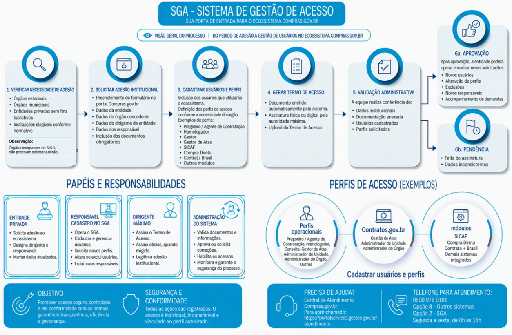
Antes de iniciar a solicitação de adesão ao Sistema de Gestão de Acesso (SGA), a entidade privada sem fins lucrativos deve reunir as informações e os documentos necessários para o preenchimento do formulário.
A preparação prévia contribui para reduzir a ocorrência de pendências e a necessidade de complementação das informações durante a análise da solicitação.
Antes de iniciar a solicitação de adesão ao Sistema de Gestão de Acesso (SGA), reúna as informações e os documentos que poderão ser necessários durante o processo.
A documentação exigida pode variar de acordo com o perfil solicitado e com as responsabilidades atribuídas à entidade privada sem fins lucrativos e ao órgão concedente. Por isso, consulte previamente os requisitos específicos do perfil que será solicitado.
Para o dirigente máximo da entidade privada sem fins lucrativos ou seu substituto legal, quando aplicável:
Para iniciar o processo de adesão, o interessado deverá acessar a página do Sistema de Gestão de Acesso (SGA) no portal Compras.gov.br:
Sistema de Gestão de Acesso ao SIASG (SGA)
Na página do SGA:
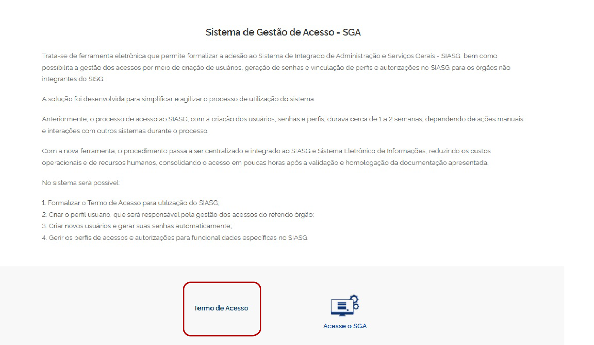
O formulário eletrônico deverá ser preenchido com todas as informações a seguir:
Ao selecionar a opção "Entidades Privadas sem fins lucrativos", serão disponibilizadas as seguintes seções:
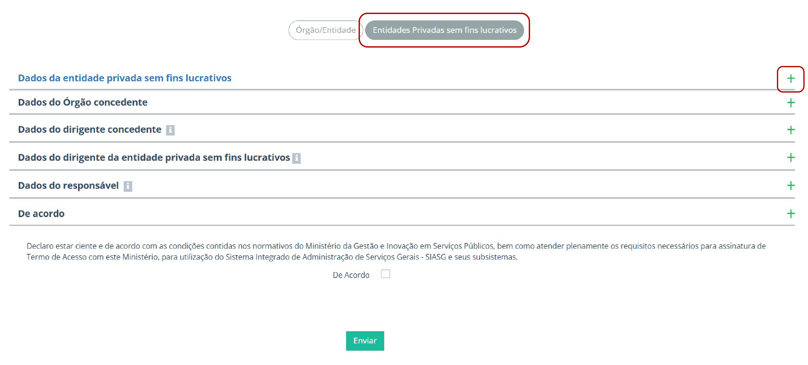
Nesta etapa, o usuário deverá preencher o formulário com as informações institucionais da entidade privada e do órgão público que celebrou o convênio, conforme os campos disponibilizados.
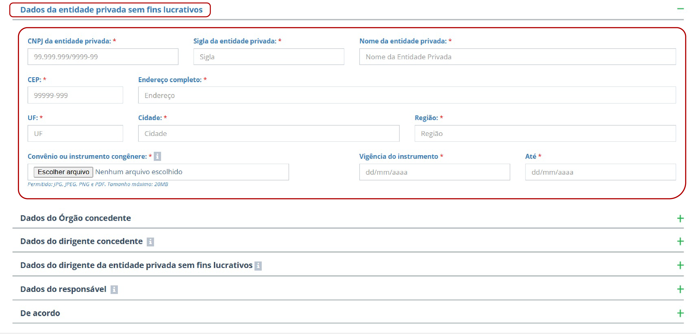
Na sequência, é necessário que o usuário preencha os campos "Dados do Órgão concedente".
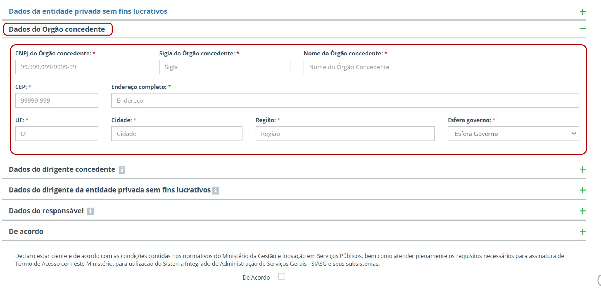
O formulário solicita informações distintas sobre o dirigente do órgão concedente e o dirigente da entidade privada sem fins lucrativos.
Corresponde à autoridade máxima ou ao dirigente máximo, ou aos seus substitutos legais, conforme aplicável.
O usuário deverá informar:
Deverão ser anexados os seguintes documentos:
O processo somente prosseguirá após:
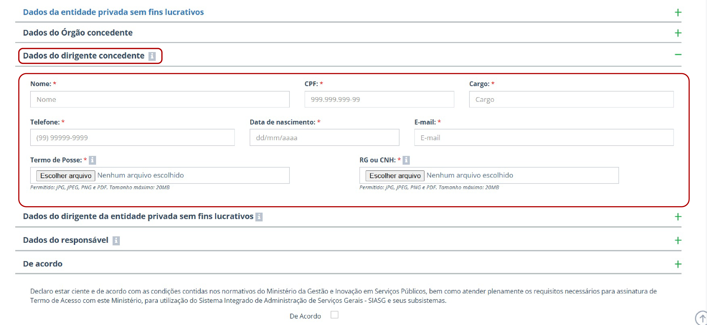
Informe os dados do dirigente máximo da entidade privada sem fins lucrativos ou de seu substituto legal, conforme aplicável.
O usuário deverá preencher os campos solicitados pelo sistema e anexar os documentos necessários à comprovação da identidade e da condição do dirigente.
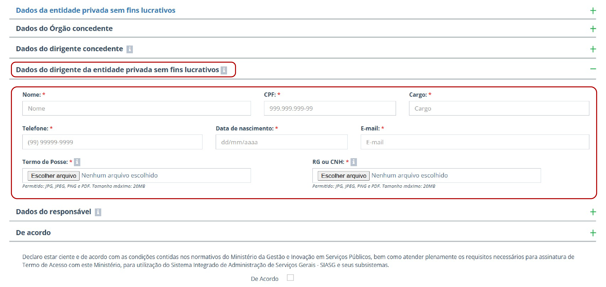
O responsável pelo cadastro corresponde à pessoa indicada pela autoridade competente da entidade privada sem fins lucrativos para realizar a gestão do cadastro do Termo de Acesso e a administração dos perfis dos usuários autorizados a utilizar o sistema.
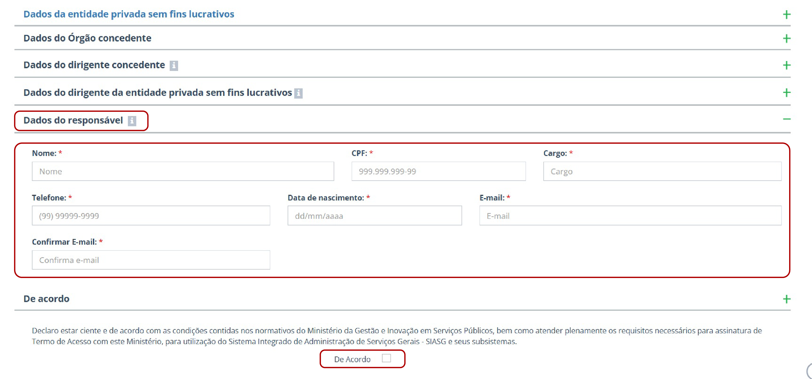
Após concluir o preenchimento das informações, o responsável deverá:
Após o envio, a solicitação seguirá o fluxo de análise e validação previsto no SGA.
Para consultar as solicitações no Sistema de Gestão de Acesso (SGA) e, posteriormente, administrar os perfis, o Responsável pelo Cadastro deve possuir credenciais de acesso à plataforma Gov.br.
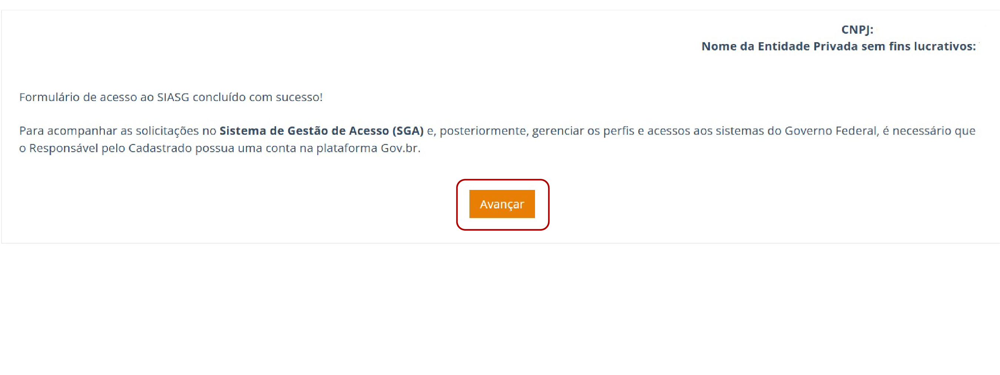
Os perfis de acesso no ecossistema Compras correspondem aos diferentes níveis de permissão atribuídos aos usuários das entidades privadas sem fins lucrativos, de acordo com suas responsabilidades e atribuições nos sistemas e serviços que utilizam.
A definição e a concessão dos perfis de acesso devem observar as responsabilidades atribuídas a cada usuário e os requisitos aplicáveis a cada sistema ou serviço, contribuindo para a segregação de funções, a segurança das operações, a integridade das informações e a conformidade com os normativos vigentes.
Os perfis disponíveis podem variar de acordo com o sistema ou serviço que a entidade necessita utilizar e com as funcionalidades disponibilizadas no SGA.
Pregoeiro (Agente de Contratação)
Agente responsável pela condução dos procedimentos licitatórios eletrônicos, conforme as atribuições e os limites estabelecidos na regulamentação aplicável.
Presidente da Comissão de Contratação
Responsável pela condução das atividades atribuídas à comissão de contratação, inclusive pelo recebimento, exame e julgamento dos documentos relativos às licitações e aos procedimentos auxiliares, conforme aplicável.
Homologador
Autoridade competente responsável pelos atos de adjudicação e homologação do processo de contratação.
Consulta
Permite o acesso para visualização das informações disponíveis, sem permissão para realizar alterações ou executar operações restritas a outros perfis.
Gestão de Atas (Contratos.gov.br)
Permite o acesso às funcionalidades relacionadas à gestão de atas de registro de preços, conforme as permissões atribuídas ao perfil.
Administrador de Unidade (Contratos.gov.br)
Responsável pela gestão de usuários no âmbito de uma unidade.
Administrador do Órgão (Contratos.gov.br)
Responsável pela gestão de usuários e respectivos acessos no âmbito do órgão, conforme as permissões atribuídas ao perfil.
Dispensa Eletrônica (Compra Direta)
Permite a atuação nas funcionalidades relacionadas aos processos de contratação direta por dispensa eletrônica, conforme as permissões atribuídas ao perfil.
SICAF
Permite acesso às funcionalidades de cadastro e consulta de fornecedores, conforme as permissões atribuídas ao perfil.
Autorizador do Órgão Comprador (Contrata+Brasil)
Autoridade competente responsável por autorizar a publicação da contratação e confirmar a escolha do fornecedor, conforme as funcionalidades e regras aplicáveis ao sistema.
Demandante do Órgão Comprador (Contrata+Brasil)
Agente responsável pelo preenchimento do formulário de cadastro da oportunidade e pela seleção do fornecedor vencedor, conforme as funcionalidades e regras aplicáveis ao sistema.
Para realizar o cadastramento de um usuário, preencha os campos solicitados e selecione o perfil de acesso correspondente às atividades que serão exercidas pelo usuário.
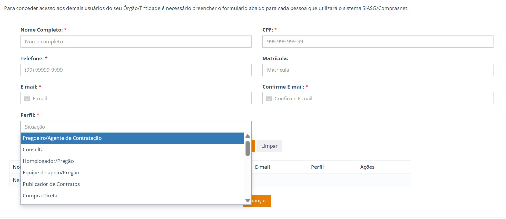
Para o perfil de Pregoeiro (Agente de Contratação), é obrigatório o anexo do ato de designação específico para o exercício da função.
Para o perfil de Homologador, deve ser anexado o ato de designação ou o termo de posse que comprove a condição de autoridade competente.
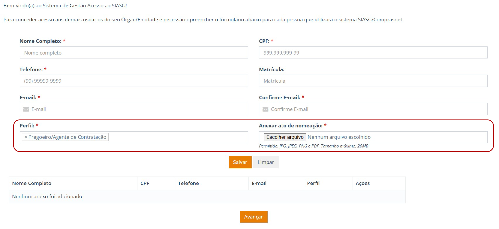
Após salvar os dados do usuário que utilizará o ecossistema Compras, o SGA permanecerá na mesma tela, permitindo a inclusão de novos usuários, se necessário.
Para prosseguir para a próxima etapa, é obrigatório o cadastro de pelo menos um usuário.
Caso seja necessário editar, excluir ou visualizar os dados inseridos, o sistema disponibiliza, no campo "Ações", as seguintes funcionalidades:
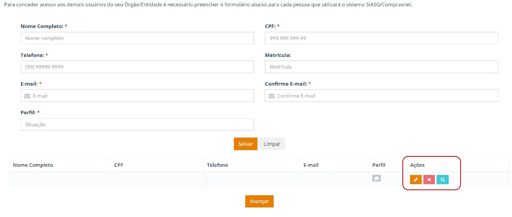
Após concluir o cadastramento dos usuários, clique em "Avançar" para acessar a próxima tela.
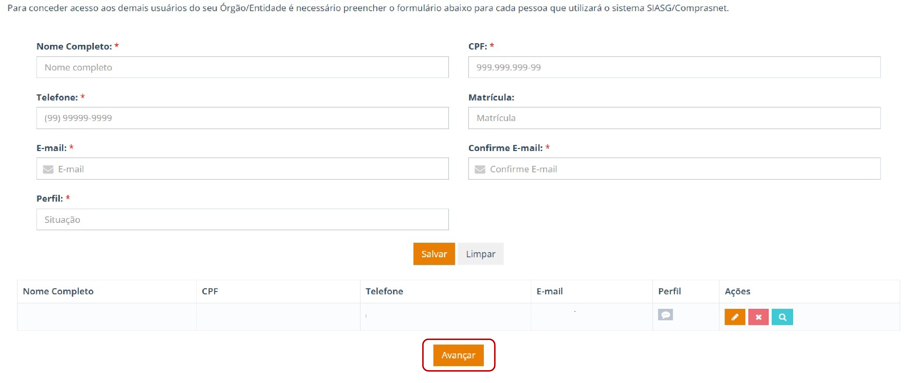
Após concluir o cadastramento dos usuários e perfis, o responsável pelo cadastro deverá gerar o Termo de Acesso no SGA.
Para isso:
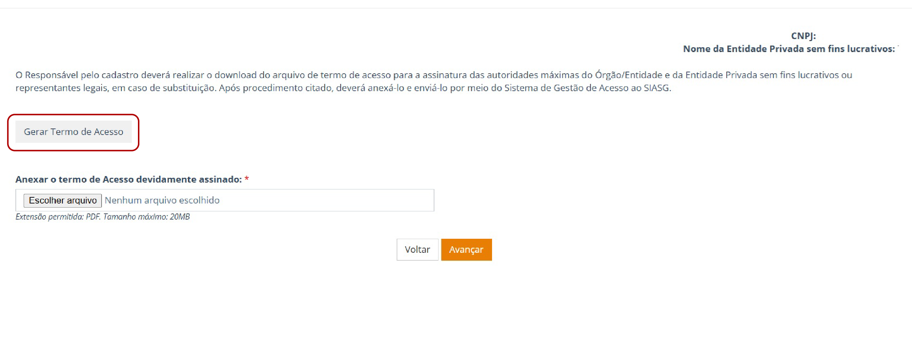
Após a geração, o Termo de Acesso deverá ser assinado pela autoridade máxima da entidade privada sem fins lucrativos ou por seu substituto legal.
As assinaturas poderão ser realizadas de forma física ou digital.
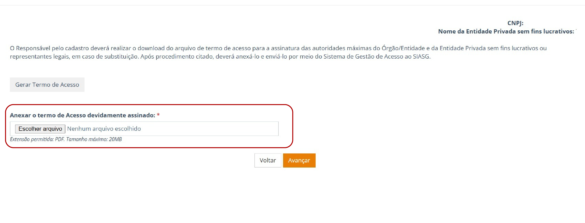
Após a assinatura, o responsável deverá anexar o Termo de Acesso assinado no SGA e prosseguir com o encaminhamento da solicitação para análise.
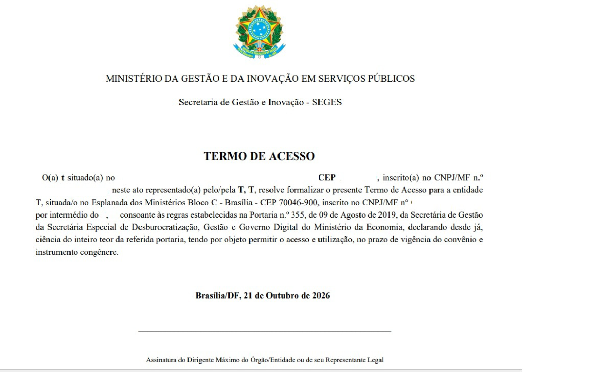
Para prosseguir com a solicitação, clique em "Avançar".
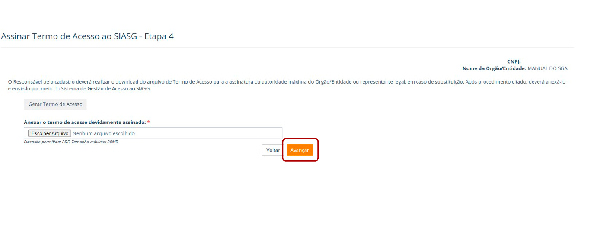
Após o encaminhamento, a solicitação será submetida ao fluxo de análise e validação previsto no SGA.
O responsável poderá acompanhar o andamento da solicitação diretamente pelo sistema.
Para isso, clique na opção “Ir para o sistema”.
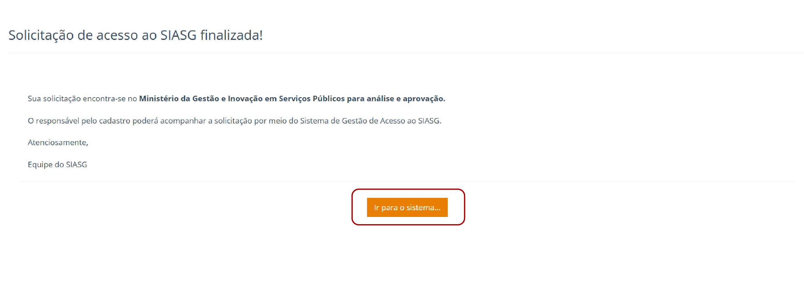
Após o encaminhamento do Termo de Acesso, o responsável poderá acompanhar, no SGA, o andamento da solicitação e verificar eventuais pendências identificadas durante a análise.
A tabela a seguir apresenta as principais situações que podem ser exibidas no sistema e a ação esperada do responsável.
| Situação do Sistema | Ação do Usuário |
|---|---|
| Aguardando validação | Aguardar a análise da solicitação pelo MGI (prazo de até 3 dias úteis). |
| Revalidar termo e usuário | Verificar as pendências relacionadas ao Termo de Acesso ou ao cadastro dos usuários. |
| Termo e usuário SIASG corrigidos | Após realizar as correções, encaminhar a solicitação para nova análise pelo MGI. |
| Termo e usuário SIASG válidos | Aguardar os procedimentos necessários para o cadastramento da entidade e a criação da UASG (Unidade Administrativa de Serviços Gerais). |
| Aguardando habilitação do(s) usuário(s) SIASG | Aguardar a conclusão da habilitação dos usuários. |
| Processo de solicitação de acesso finalizado | O processo foi concluído e o sistema estará disponível para utilização, conforme os acessos habilitados. |
Os prazos e as situações apresentadas no SGA devem ser considerados conforme o andamento efetivo da solicitação no sistema.
Quando a solicitação for devolvida para correção, o responsável deverá consultar a pendência apresentada no SGA e realizar os ajustes necessários antes de encaminhar novamente a solicitação para análise.
Caso o Termo de Acesso seja devolvido por ausência de assinatura, o sistema direcionará o responsável para a tela correspondente.
O responsável deverá:
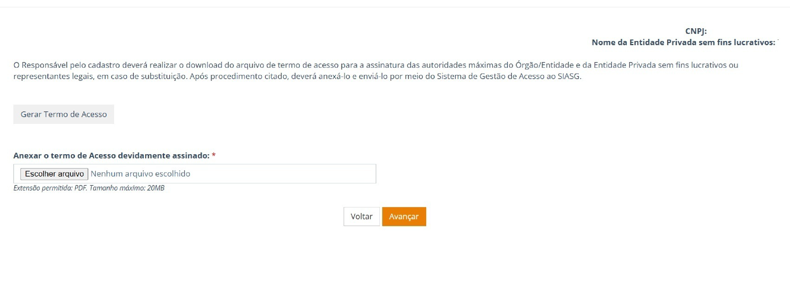
Caso a solicitação seja devolvida em razão de pendências no cadastro de usuários, o sistema direcionará o responsável para a tela correspondente.
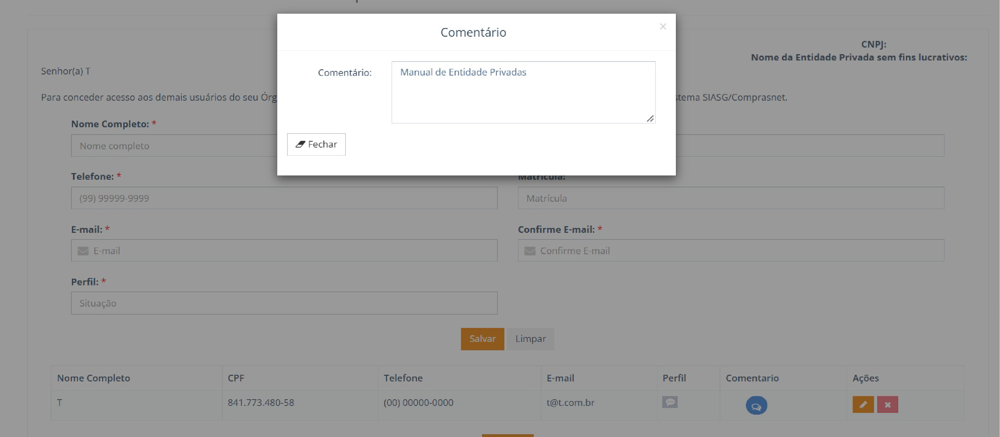
Na opção "Comentário", o sistema apresentará uma mensagem encaminhada pelo Ministério, contendo a descrição específica de cada pendência identificada.
Para realizar a correção, o responsável deverá clicar no ícone de "Editar" para alterar o registro do usuário.
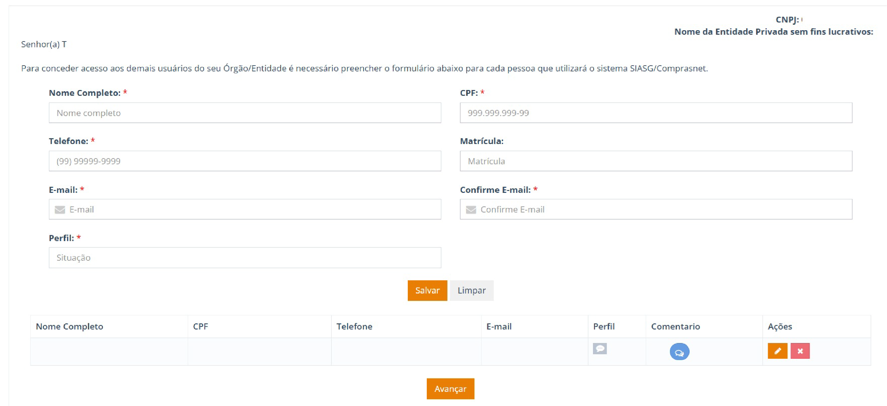
Após realizar as alterações, clique em “Salvar”.
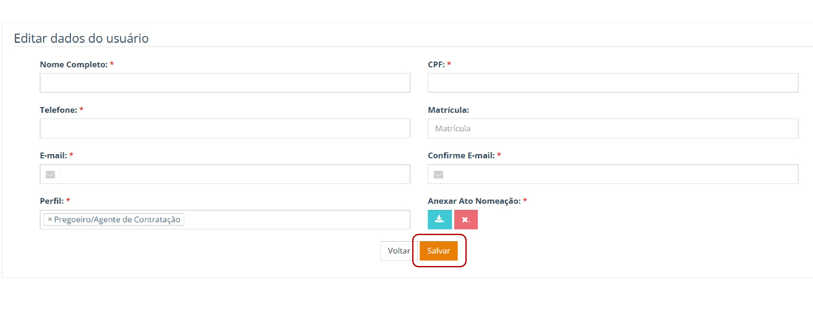
Caso seja necessário remover o cadastro do usuário, clique no ícone "Excluir".
O sistema exibirá a mensagem:
"O usuário será excluído da solicitação. Deseja prosseguir?"
Selecione "Sim" para confirmar a exclusão ou "Não" para cancelar a operação.
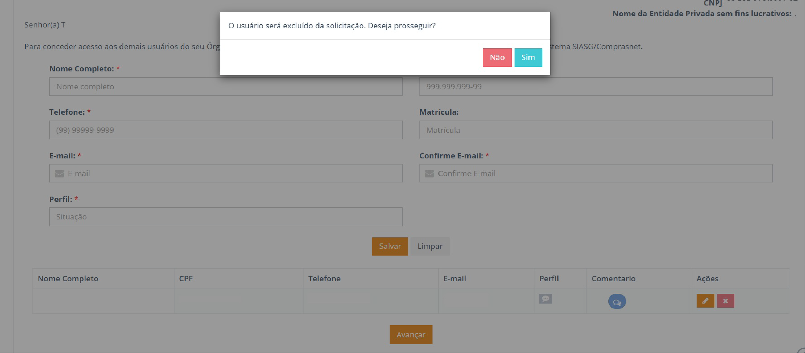
Caso a pendência apresentada não possa ser solucionada pelas funcionalidades disponíveis no SGA, o responsável deverá entrar em contato com a Central de Atendimento para obter orientação.
Central de Atendimento: Portal de Atendimento do Compras.gov.br
Após realizar as correções, clique em "Avançar". O sistema irá direcionar o usuário para a próxima tela.
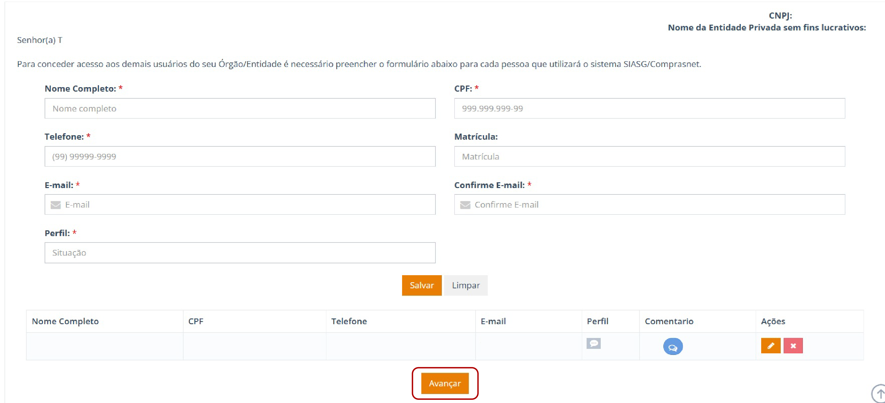
Na etapa seguinte, clique em “Gerar Termo de Acesso”. O sistema exibirá o documento com as correções realizadas.
Na sequência, realize o download do Termo de Acesso, providencie as assinaturas e, posteriormente, anexe o Termo de Acesso devidamente assinado no sistema.
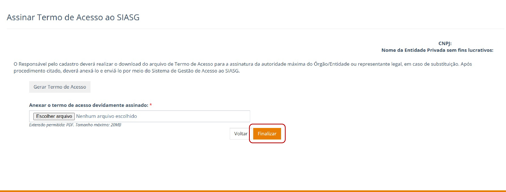
Por fim, clique em "Finalizar" para encaminhar a solicitação corrigida para nova análise.
O sistema exibirá a mensagem "Termo e usuário SIASG corrigidos".
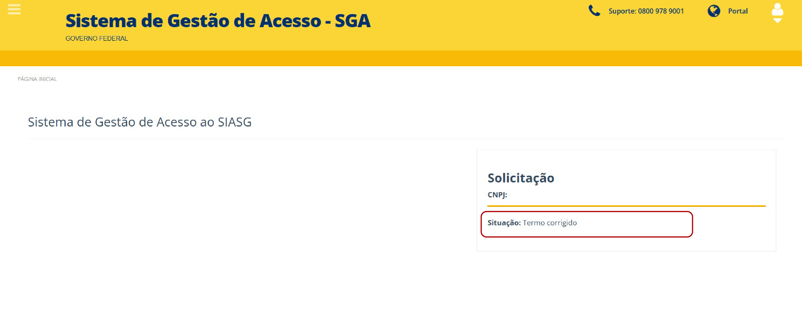
Quando o Termo de Acesso e o cadastro dos usuários forem validados e os procedimentos necessários para a habilitação dos acessos forem concluídos, a solicitação será considerada finalizada.
Após a conclusão, o responsável poderá realizar o gerenciamento dos usuários cadastrados e, quando necessário, solicitar novos acessos ao ecossistema Compras.
Após a conclusão da solicitação inicial, o responsável pelo cadastro poderá solicitar novos acessos para usuários da entidade.
Para iniciar uma nova solicitação, deverá:
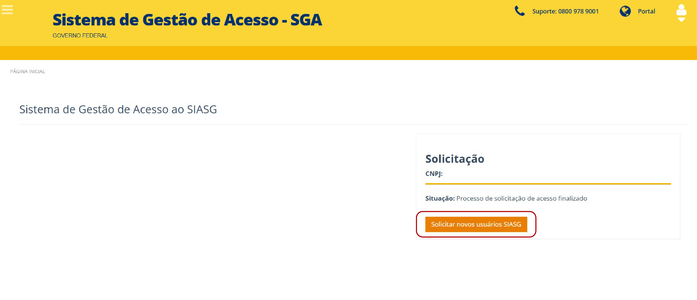
Para cadastrar um usuário no ecossistema Compras, preencha todos os campos solicitados e selecione o perfil desejado.
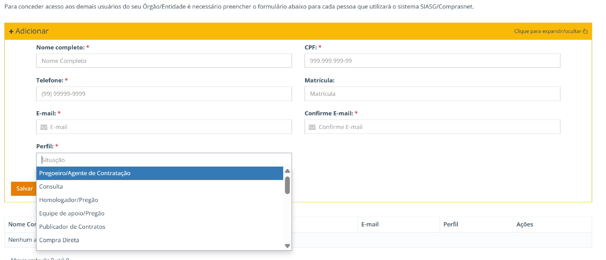
Para os perfis de Pregoeiro ou Agente de Contratação e Homologador, deverá ser anexado o respectivo ato de designação ou documento comprobatório exigido pelo sistema, conforme o perfil selecionado.
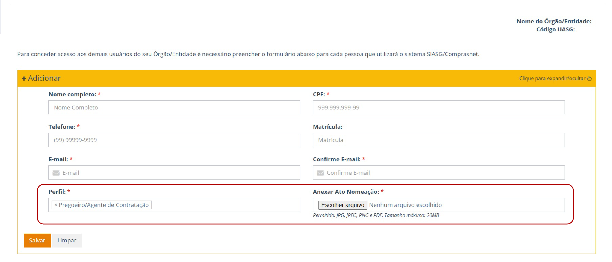
Após o salvamento dos dados, o sistema permanecerá na mesma tela, permitindo a inclusão de novos usuários, se necessário.
No campo "Ações", o responsável poderá editar, excluir ou visualizar os registros e os documentos anexados, conforme as funcionalidades disponibilizadas pelo sistema.
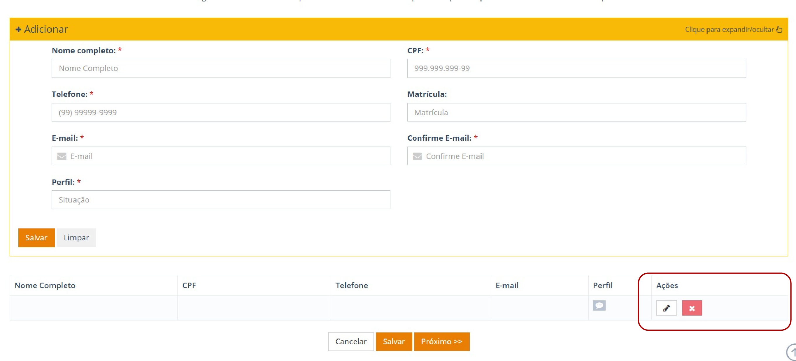
Após a formação da lista de usuários, clique em "Avançar" para prosseguir à próxima etapa.
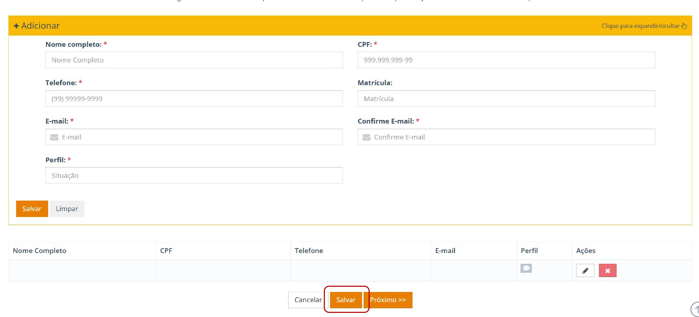
O responsável pelo cadastro deverá clicar em “Ofício dos Novos Usuários SIASG”.
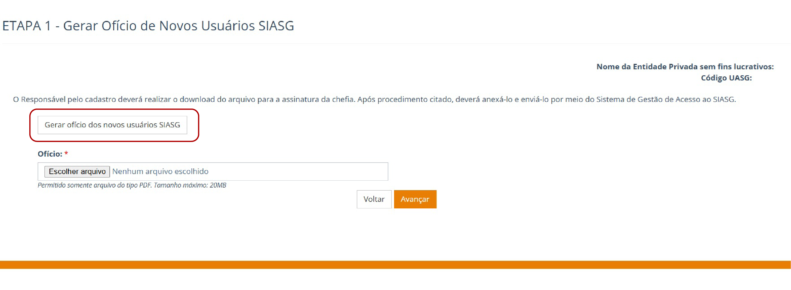
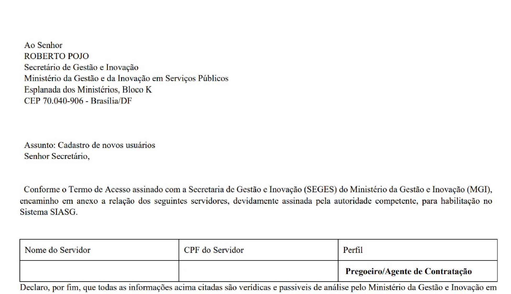
Em seguida, o ofício deverá ser assinado pela autoridade competente da entidade privada sem fins lucrativos, anexado ao sistema SGA e encaminhado para análise pelo Ministério.
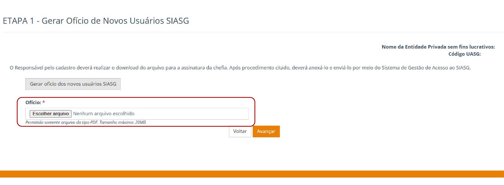
Para concluir a solicitação de acesso, o responsável deverá clicar em "Avançar".
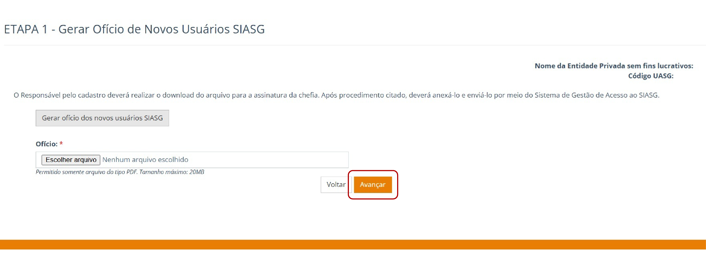
| Situação | Ação do Usuário |
|---|---|
| Ofício anexado | Aguardar a análise do Ministério da Gestão e da Inovação em Serviços Públicos (MGI). Prazo de até 3 dias úteis. |
| Solicitação de novos usuários com pendências | Consultar os comentários e verificar as pendências indicadas no sistema. |
| Pendência no ofício resolvida | Aguardar a avaliação do MGI. |
| Solicitação de novos usuários aprovada | Aguardar a conclusão da habilitação pelo MGI. |
| Usuários habilitados | O sistema estará apto a receber novas solicitações. |
Quando houver pendência relacionada à solicitação de novos usuários, o sistema exibirá a mensagem: "Rever Solicitação de Usuários SIASG".
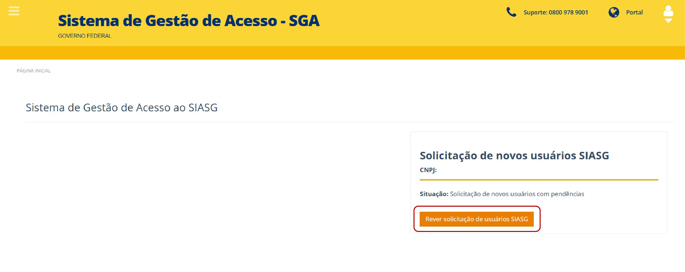
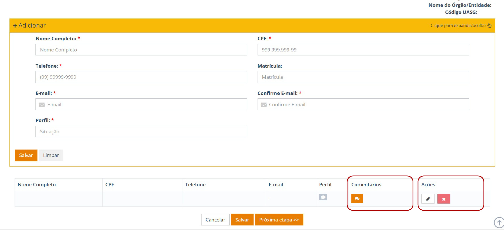
Para visualizar as informações enviadas pelo Ministério, clique no ícone de "Comentários".
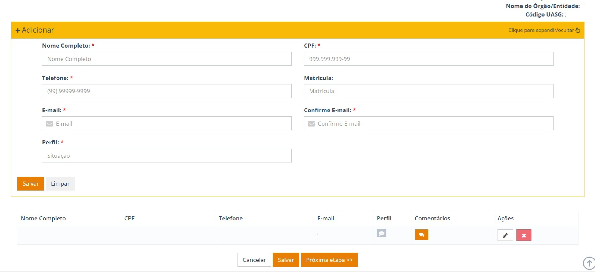
Para corrigir uma pendência, clique no ícone correspondente à edição do registro.
O sistema permitirá atualizar os dados cadastrados ou, quando aplicável, anexar a nomeação do pregoeiro ou o ato de designação do homologador.
Clique em "Salvar" para efetivar a alteração.
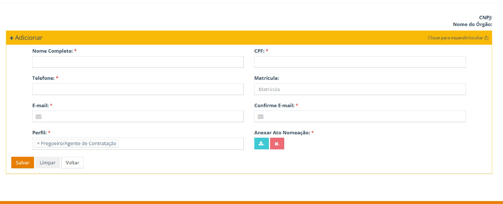
Caso seja necessário excluir um usuário da solicitação, clique no ícone correspondente.
O sistema exibirá a mensagem:
"Deseja realmente excluir este usuário?"
Selecione "Não" para cancelar a operação ou "Sim" para confirmar a exclusão.
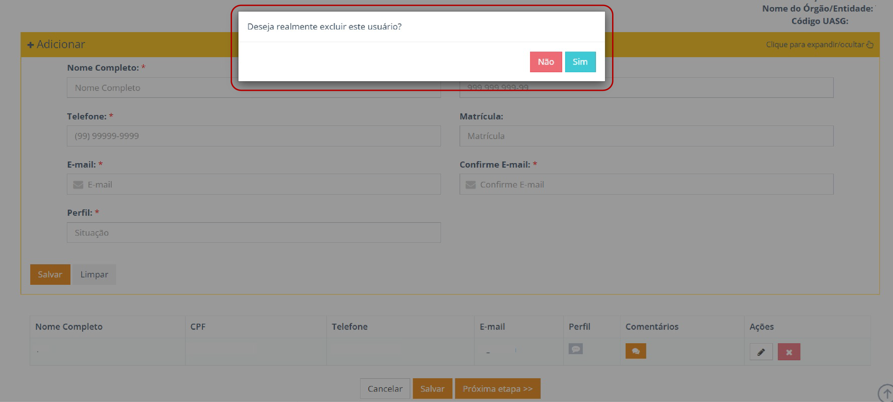
Após realizar as correções necessárias, clique em "Próxima Etapa" para dar continuidade ao processo.
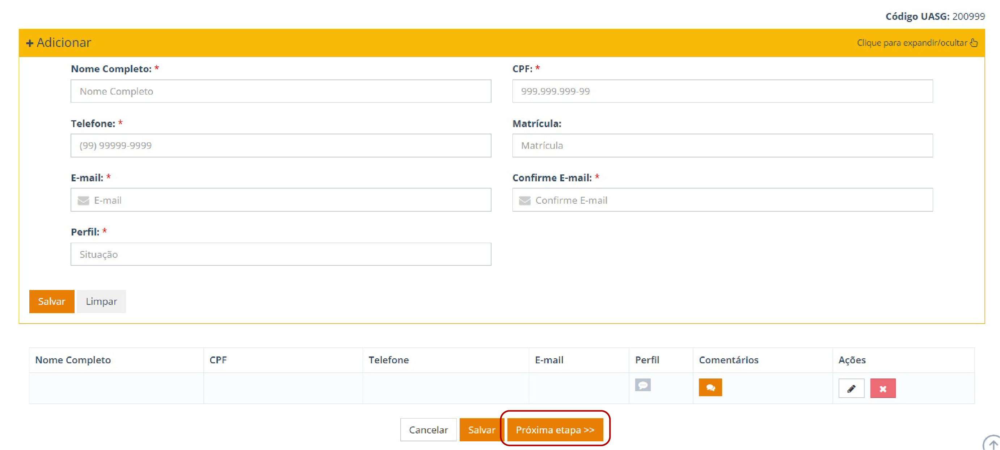
Na etapa seguinte, selecione a opção "Gerar Ofício dos Novos Usuários SIASG" para gerar o documento atualizado.
O responsável deverá:
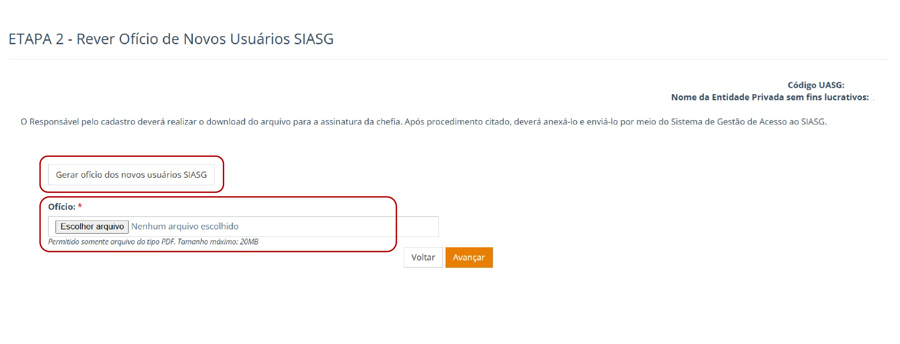
Após o reencaminhamento das informações e documentos corrigidos, a solicitação retornará para análise do Ministério.
O responsável deverá acompanhar o andamento da solicitação no SGA.
Para acessar a funcionalidade de gerenciamento dos usuários, clique no ícone de menu (três barras), localizado no canto superior esquerdo da tela.
Em seguida, clique em "Usuários SIASG" e selecione a opção "Gerenciar usuários SIASG".
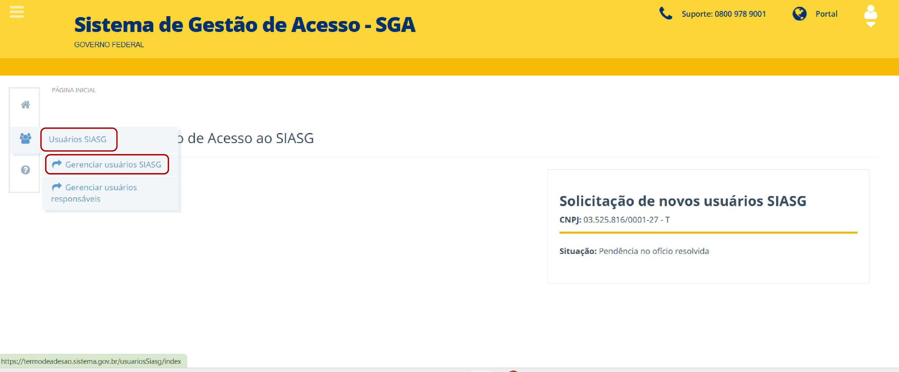
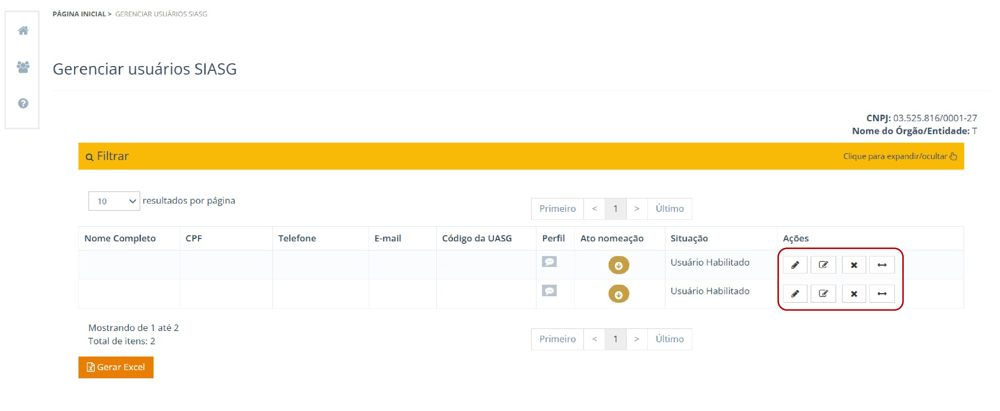
Para editar um registro, clique no ícone correspondente.
O responsável pelo cadastro poderá alterar apenas o nome, o telefone, o e-mail e a matrícula.
Logo após realizar as alterações, clique em "Salvar".
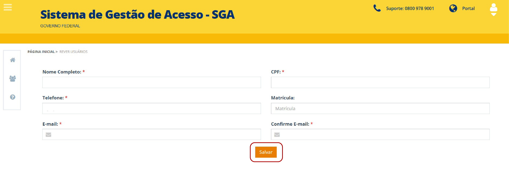
Para alterar um registro, clique no ícone correspondente.
O sistema permitirá selecionar ou modificar o perfil existente, a partir da lista de perfis disponíveis.
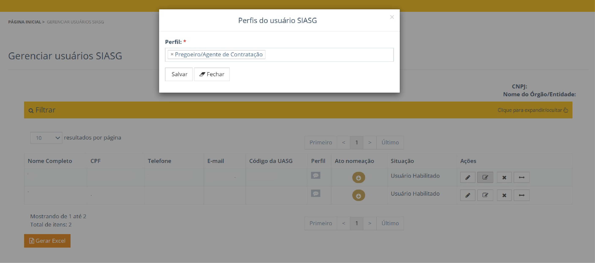
Para excluir um registro, clique no ícone correspondente.
O sistema exibirá uma mensagem de confirmação.
Clique em "Não" para cancelar o procedimento ou em "Sim" para confirmar a exclusão.
A funcionalidade de alteração da UASG vinculada ao CPF do usuário está disponível exclusivamente para a Administração Pública, permitindo ao órgão realizar a gestão de múltiplas UASGs.
Para fins deste manual, UASG (Unidade Administrativa de Serviços Gerais) é o código utilizado no SIASG para identificar uma unidade administrativa responsável pela utilização dos sistemas e pela execução de atividades relacionadas à gestão de serviços gerais.
Para as entidades privadas sem fins lucrativos, a criação e a vinculação da UASG são realizadas no processo de adesão, conforme explicado na seção 12.1 – Situações da solicitação. A entidade não deverá realizar essa alteração diretamente.
Se for necessário incluir novos responsáveis, o sistema disponibiliza o ícone de menu (três barras), localizado no canto superior esquerdo.
Logo depois, clique em "Usuários SIASG" e selecione a opção "Gerenciar usuários responsáveis".
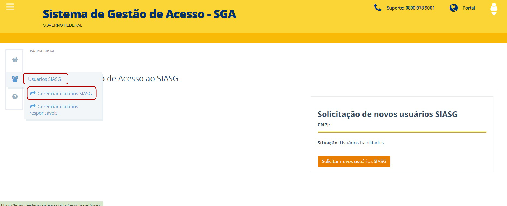
O responsável pelo cadastro deve ser pessoa indicada pela entidade privada sem fins lucrativos para realizar a gestão dos usuários e dos respectivos acessos no SGA.
Clique na opção "Cadastrar".
Serão exibidos os campos necessários para o cadastro de um novo responsável: Nome, CPF, Cargo, Telefone, Data de Nascimento e E-mail.
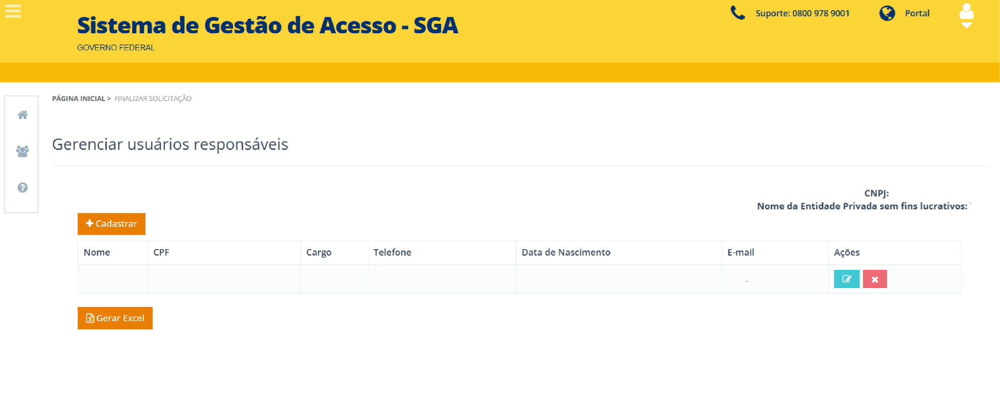
Para finalizar o procedimento, clique em "Salvar".
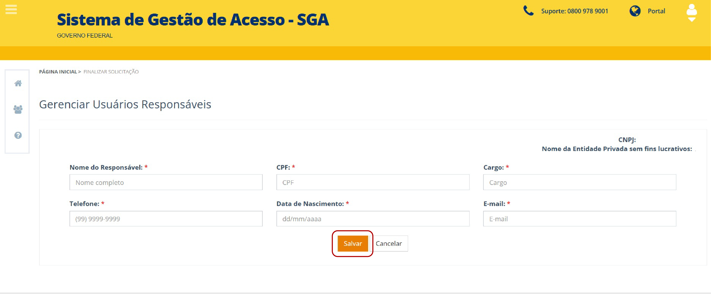
Se houver necessidade, inclua novos responsáveis, repetindo o procedimento indicado. É possível adicionar quantos forem necessários.
Para alterar ou excluir um responsável, clique no ícone de menu (três barras), localizado no canto superior esquerdo da tela.
Em seguida, clique em "Usuários SIASG" e selecione a opção: "Gerenciar usuários responsáveis".
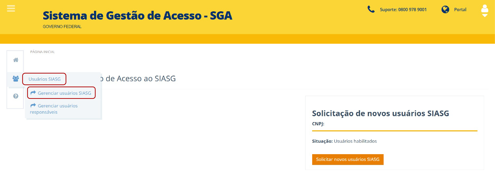
Para alterar os dados do responsável, acesse a coluna "Ações" e clique em "Editar".
Realize as alterações necessárias e clique em "Salvar".
Para excluir um responsável, acesse a coluna "Ações" e clique em "Excluir".
O sistema exibirá a mensagem de confirmação:
"Deseja realmente excluir este responsável?"
Clique em "Não" para cancelar a operação ou em "Sim" para confirmar a exclusão.
Antes de excluir o último responsável cadastrado, a entidade privada sem fins lucrativos deverá cadastrar outro responsável.
Dessa forma, evita-se que a entidade fique sem responsável para realizar a gestão dos usuários e dos respectivos acessos no sistema.
Para acessar o Sistema de Gestão de Acesso (SGA), o responsável pelo cadastro deverá utilizar sua conta Gov.br.
Acessar a página do SGA no Portal Compras
Para realizar a gestão dos usuários e acompanhar ou gerenciar as solicitações no Sistema de Gestão de Acesso (SGA), é necessário que o responsável pelo cadastro possua uma conta ativa na plataforma Gov.br.
O Sistema de Gestão de Acesso (SGA) constitui instrumento estratégico para o fortalecimento da governança, da segurança e da padronização do acesso ao ecossistema Compras do Governo Federal.
Este manual consolida orientações técnicas e procedimentais destinadas a apoiar as entidades privadas sem fins lucrativos na correta utilização do sistema, contribuindo para o aprimoramento da eficiência administrativa, da transparência e da conformidade com os normativos vigentes.
O presente documento possui caráter orientativo e procedimental. Eventuais atualizações dos sistemas ou alterações normativas poderão implicar revisões futuras do conteúdo aqui apresentado.
Sim. As entidades privadas sem fins lucrativos que atendam aos requisitos estabelecidos na regulamentação vigente poderão solicitar acesso ao ecossistema Compras.gov.br por meio do Sistema de Gestão de Acesso (SGA).
Pode ser cadastrada como responsável pelo SGA a pessoa indicada pela entidade privada sem fins lucrativos para realizar a gestão do Termo de Acesso, dos usuários e dos respectivos acessos no sistema.
Sim. O sistema permite o cadastramento de mais de um responsável. Antes de excluir o último responsável cadastrado, a entidade deverá cadastrar outro responsável, de modo a evitar que fique sem responsável para realizar a gestão dos usuários e dos respectivos acessos.
O Termo de Acesso deverá ser assinado pelo dirigente máximo da entidade privada sem fins lucrativos ou por seu substituto legal, conforme os requisitos aplicáveis ao procedimento.
Sim. O responsável pelo SGA deve possuir uma conta ativa na plataforma Gov.br para acessar e realizar a gestão das solicitações no Sistema de Gestão de Acesso.
Sim. O preenchimento correto dos dados e a anexação dos documentos exigidos são necessários para o prosseguimento da solicitação.
O sistema apresentará a situação correspondente à pendência e permitirá ao responsável consultar os comentários, corrigir as informações ou documentos necessários e encaminhar a solicitação para nova análise.
Sim. O responsável poderá receber notificações relacionadas ao andamento da solicitação e às eventuais pendências no endereço de e-mail informado no cadastro.
A entidade deverá providenciar a exclusão ou a alteração do acesso do usuário desligado, conforme as funcionalidades disponíveis no SGA, de modo a manter atualizados os acessos institucionais.
Não. As credenciais de acesso são pessoais e intransferíveis e não devem ser compartilhadas com terceiros.
Não. A solicitação ou alteração de perfil está sujeita aos procedimentos de análise, validação e habilitação previstos no fluxo do SGA.
Ministra: Esther Dweck
Secretário: Roberto Seara Machado Pojo Rego
Secretária-Adjunta: Regina Lemos de Andrade
Diretor: Everton Batista dos Santos
Coordenador-Geral: Alexandre Augusto Villain da Silva
Coordenação de Qualidade de Atendimento (COQUAT)
Coordenação Técnica: Camilla Pais Faccin Bottecchia
Especialistas Técnicos:Projeto gráfico / Identidade visual: André Siqueira
| Título do Documento | Manual do Sistema de Gestão de Acesso (SGA) – Entidades Privadas sem Fins Lucrativos |
| Versão | 1.0 |
| Data da Publicação | XX/10/2026 |
| Órgão | Ministério da Gestão e da Inovação em Serviços Públicos (MGI) |
| Unidade Responsável | Secretaria de Gestão e Inovação (SEGES) |
| Coordenação Técnica |
Camilla Pais Faccin Bottecchia Coordenadora Técnica |
| Coordenação-Geral |
Alexandre Augusto Villain da Silva Coordenador-Geral |
| Aprovação |
Everton Batista dos Santos Diretor de Normas e Sistemas de Logística |
| Equipe Técnica Especializada |
Alexandre Almeida de Mota Matos Emy Karla Macedo Pereira Fernanda Correia de Castro Jurandir Gomes de Oliveira Maria de Fátima Gomes Moreira Vera Márcia Lopes Vieira de Souza |
| Projeto Gráfico / Identidade Visual | André Siqueira |
| Contato |
seges@gestao.gov.br (61) 2020-6025 |